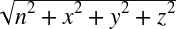

1Chapter 11. Rotation in 3D Rigid-Body Simulators
2A fundamental difference between 6472particles and rigid bodies is that we cannot ignore rotation of rigid bodies. 6473 This applies to both 2D and 3D rigid bodies. 8 In two dimensions, it's quite easy to express the 6475orientation of a rigid body; you need only a single scalar to represent the body's rotation about a single axis. 6476 In three dimensions, however, there are three primary coordinate axes about each of which a rigid body may rotate. 6477 Moreover, a rigid body in three dimensions may rotate about any arbitrary axis, not necessarily one of the coordinate axes.
14In two dimensions, we say that a rigid body has only one rotational degree of freedom, whereas in three dimensions we say that a rigid body has three rotational 6481degrees of freedom. 6482 This may lead you to infer that in three dimensions, you must have three scalar quantities to represent a body's rotation. 17 Indeed, this is a minimum requirement, and you're probably already familiar with a set of angles that represent the orientation of a rigid body in 3D—namely, the three 18Euler angles (roll, pitch, and yaw) that we'll talk about in 20Chapter 156486 .
6488These three angles—roll, pitch, and yaw—are very intuitive and easy for us to visualize. 23 For example, in an airplane the nose 25pitches up or down, the plane 26rolls (or banks) left or right, and the 6495yaw (or heading) changes to the left or right. 6496 Unfortunately, there's a problem with using these three Euler angles in rigid-body simulations. 6497 The problem is a numerical one that occurs when the pitch angle reaches plus or minus 90 degrees (π/2). 6498 When this happens, roll and yaw become ambiguous. 6499 Worse yet, the angular equations of motion written in terms of Euler angles contain terms involving the cosine of the pitch angle in the denominator, which means that when the pitch angle is plus or minus 90 degrees the equations become singular (i.e., there's division by 0). 6500 If this happens in your simulation, the results would be unpredictable to say the least. 6501 Given this problem with Euler angles, you must use some other means of keeping track of orientation in your simulation. 6502 We'll discuss two such means in this chapter—specifically, rotation matrices and quaternions.
6505Virtually every computer graphics book that we've read contains a chapter or section on using rotation matrices. 6506 Far fewer discuss quaternions, but if you're familiar with quaternions, it's probably in the same context as rotation matrices—that is, how they are used to rotate 3D points, objects, scenes, and points of view. 6507 In a simulation, however, you need to get a little more out of rotation matrices or quaternions and will use them in a different context than what you might be accustomed to. 6508 Specifically, you need to keep track of a body's orientation in space and, moreover, the change in orientation over time. 6509 So it's in this light that we'll discuss rotation matrices and quaternions. 44 We'll try to be as concise as possible so as not to cloud the water with the proofs and derivations that you can find in the texts referred to in the 45Bibliography6512 .
48Rotation Matrices
49A rotation matrix is a 3×3 matrix that, 6517when multiplied with a point or vector, results in the rotation of that point about some axis, yielding a new set of coordinates. 6518 You can rotate points about axes in one coordinate system or you can use rotation matrices to convert points from one coordinate system to another, where one is rotated relative to the other.
| 55v55' = 55R v |
| 58R58c58 = 58R581 58R582 |
| 61R61c61 = 61R612 61R611 |
6529We won't go into the proof of this relation, but the reason it's different depending on how you've defined your rotation matrices is that rotation matrices defined in fixed coordinates are unaffected by the rotation itself since the coordinate axes stay fixed. 6530 On the other hand, if the rotation matrices are defined relative to a coordinate system that is rotating due to sequential application of rotation matrices, then all rotation matrices after the first will be affected since they were first defined relative to the original state of the coordinate system—that is, before the first rotation matrix was applied. 6531 This means that the subsequent rotation matrices must be corrected to reflect the new system as affected by the previous rotation before they can be correctly applied. 66 In other words, you have to rotate 66R66266 by 66R66166 to get a new 66R6626532 before applying it. 67 All this happens to work out in such a way that you reverse the order of multiplication of rotation matrices when they are defined in a r6534otating coordinate system.
71Figure 11-16537 shows a right-handed coordinate system that illustrates the directions of positive rotation about each coordinate axis.
79Let's consider rotation around the80 z-axis where the point shown in 82Figure 11-26548 is rotated through an angle θ.
| 91x91r91 = x cos θ − y sin θ |
| 91y91r91 = x sin θ + y cos θ |
| 91z91r91 = z |
99Here 99v'99 will be the new, rotated vector, 99v99' = [x99r 99y99r 99z99r99]6565 .
102Rotation about 104the x- and y-axes is similar to the z-axis; however, in those cases the 104x104 and 104y6570 coordinates remain constant during rotations about each axis, respectively. 6571 Looking at rotation about each axis separately will yield three rotation matrices similar to the one we just showed you for rotation about the z-axis.
108For rotation about the x-axis, the matrix is:
113And for rotation about the y-axis, the matrix is:
122In rigid-body simulations, you can use a rotation matrix to represent the 6589orientation of a rigid body. 6590 Another way to think of it is the rotation matrix, when applied to the unrotated rigid body aligned with the fixed global coordinate system, will rotate the rigid body's coordinates so as to resemble the body's current orientation at any given time. 6591 This leads to another important consideration when using rotation matrices to keep track of orientation in rigid-body simulations: the fact that the rotation matrix will be a function of time.
128Once you set up your initial rotation matrix for the rigid body, you'll never directly calculate it again from orientation angles; instead, the forces and moments applied to the rigid body will change the body's angular velocity, 6596likewise causing small changes in orientation at each time step throughout the simulation. 6597 Thus, you can see that you must have a means of relating the rotation matrix to angular velocity so that you can update the orientation accordingly. 132 The formula you need is as follows:
| 132d 132R132 / dt = 132Ω R |

6613It should also be obvious that you gain these benefits at some price. 6614 First, you have to deal with nine parameters in the rotation matrix (each element in the 3×3 rotation matrix) to represent three angular degrees of freedom. 149 Secondly, in order to do that, you need to impose constraints on the rotation matrix; specifically, you need to enforce the constraint that the matrix be orthogonal with a determinant of 1 so that it satisfies the following (each column in the matrix 150represents a unit vector, and they are all at right angles to each other):150[15220152]
| 152R152T 152R152 = 152I |
153Here 153R153T153is the transpose of 153R153, and 153I6619 is the identity matrix. 6620 Due to numerical errors such as roundoff and truncation, you'll have to enforce this constraint very often in your simulation. 6621 Otherwise, your rotation matrix will do more than rotate your objects, it may scale or translate them too.
6623Instead of dealing with nine parameters and trying to constrain six degrees of freedom so that only the three you want can be represented, you could take an alternative approach that lets you keep the advantages rotation matrices have to offer, but at a cheaper price. 158 That alternative, quaternions, is the subject of the next 6626section.
165Quaternions are somewhat of a 6633mathematical oddity. 168 They were developed over 100 years ago by 6635William Hamilton through his work in complex (imaginary) math but have found very little practical use. 6636 A quaternion is a quantity, kind of like a vector, but made up of four components. 171 It is typically written in the form:
| 171q171 = q1710171 + q171x 171i171 + q171y 171j171 + q171z 171k |
173A quaternion is really a four-dimensional 6640quantity in complex space and, unfortunately, does not lend itself to visualization. 175 Don't worry, though: our use of quaternions to 6642represent orientation in three dimensions does allow us to attach a physical meaning to them, as you'll see in a moment.
| 179q17901792179 + q179x1792179 + q179y1792179 + q179z1792179 = 1 |
6647This is analogous to a normalized, or unit, vector.
| 186q186 = [cos(θ/2) , sin(θ/2) 186u186] |
188This is illustrated in 189Figure 11-3189 for an arbitrary rigid body rotating about an axis passing through its 6657center of gravity. 6658 The rigid body rotates through an angle θ from the position shown in light gray to the position shown in dark gray. 193 Here, the unit vector 193u193 is the vector 193v6659 normalized to unit length.
6670The use of quaternions to represent orientation is similar to how you would use rotation matrices. 6671 First, you set up a quaternion that represents the initial orientation of the rigid body at time 0 (this is the only time you'll calculate the quaternion explicitly). 6672 Then you update the orientation to reflect the new orientation at a given instant in time using the angular velocities that are calculated for that instant. 207 As you can see here, the differential equation relating an orientation quaternion to 209angular velocity is very similar to that for rotation matrices:
| 209d209q209/dt = (1/2) 209ω q |
| 212d212q212/dt = (1/2) 212q ω |
| 215v215' = 215qvq215* |
217Here 217q217*217 is the conjugate of the quaternion 217q217 defined as:
| 217q217* = q2170217 – q217x 217i217 – q217y 217j217 – q217z 217k |
6691As with vectors and matrices, quaternions have their own rules for the various operations that you'll need, such as multiplication, addition, subtraction, and so on. 226 To make it easy on you, we've included sample code in 227Appendix C6694 that implements all of the quaternion operations you'll need; however, we want to highlight a few of the more important ones here.
230The 230Quaternion230 class is 232defined with a scalar component, 232n232, and vector component, 232v232, where 232v232 is the vector, 232x
232i232 + 232y
232j232 + 232z
232k6698 . 233 The class has two constructors, one of which initializes the quaternion to 0, and the other of which initializes the elements to those passed to the constructor:
class Quaternion {
public:
float n; // number (scalar) part
Vector v; // vector part: v.x, v.y, v.z
Quaternion(void);
Quaternion(float e0, float e1, float e2, float e3);
.
.
.
};236Magnitude
238The 238Magnitude238 method 240returns the magnitude of the quaternion according to the following formula:
| 240|240q240| =  |
245Here's the code that calculates the magnitude for our 245Quaternion245 class:
inline float Quaternion::Magnitude(void)
{
return (float) sqrt(n*n + v.x*v.x + v.y*v.y + v.z*v.z);
}250The conjugate of the product of 254quaternions is equal to the product of the quaternion conjugates, but in reverse order:
| 254~(254qp254) = (~254p254)(~254q254) |
256Here's the code that computes the conjugate for our 256Quaternion256 class:
Quaternion operator~(void) const { return Quaternion( n,
-v.x,
-v.y,
-v.z);}261This function rotates 263the vector 263v263 by the unit quaternion 263q263 according to this formula:
| 263p263' = (263q263)(263v263)(~263q263) |
265Here, ~265q265 is the conjugate of the unit quaternion, 265q265:
inline Vector QVRotate(Quaternion q, Vector v)
{
Quaternion t;
t = q*v*(~q);
return t.GetVector();
}267This operator takes the conjugate of the quaternion, ~267q6733 , which is simply the negative of the vector part. 268 If 268q268 = [268n268, 268x 268i268 + 268y 268j268 + 268z 268k268], then ~268q268 = [268n268, (−268x268) 268i268 + (−268y268) 268j268 + (−268z268) 268k6734 ].
273This operator performs 277quaternion multiplication according to the following formula:
| 277q p277 = n277q277 n277p277 − 277v277q277 • 277v277p277 + n277q 277v277p277 + n277p 277v277q277 + (277v277q277 × 277v277p277) |
283Quaternion multiplication is associative but not commutative, thus:
| 283q283(283ph283) = (283qp283)283h |
| 283qp283 ≠ 283pq |
285Here's the code that multiplies two 285Quaternion285s, 285q1285 and 285q2285:
inline Quaternion operator*(Quaternion q1, Quaternion q2)
{
return Quaternion(q1.n*q2.n - q1.v.x*q2.v.x
- q1.v.y*q2.v.y - q1.v.z*q2.v.z,
q1.n*q2.v.x + q1.v.x*q2.n
+ q1.v.y*q2.v.z - q1.v.z*q2.v.y,
q1.n*q2.v.y + q1.v.y*q2.n
+ q1.v.z*q2.v.x - q1.v.x*q2.v.z,
q1.n*q2.v.z + q1.v.z*q2.n
+ q1.v.x*q2.v.y - q1.v.y*q2.v.x);
}290This operator 294multiplies the quaternion, 294q294, by the vector 294v294 as though the vector 294v6760 were a quaternion with its scalar component equal to 0. 6761 There are two forms of this operator depending on the order in which the quaternion and vector are encountered. 296 Since 296v296 is assumed to be a quaternion with its scalar part equal to 0, the rules of multiplication follow those outlined earlier for quaternion multiplication:
inline Quaternion operator*(Quaternion q, Vector v)
{
return Quaternion( -(q.v.x*v.x + q.v.y*v.y + q.v.z*v.z),
q.n*v.x + q.v.y*v.z - q.v.z*v.y,
q.n*v.y + q.v.z*v.x - q.v.x*v.z,
q.n*v.z + q.v.x*v.y - q.v.y*v.x);
}
inline Quaternion operator*(Vector v, Quaternion q)
{
return Quaternion( -(q.v.x*v.x + q.v.y*v.y + q.v.z*v.z),
q.n*v.x + q.v.z*v.y - q.v.y*v.z,
q.n*v.y + q.v.x*v.z - q.v.z*v.x,
q.n*v.z + q.v.y*v.x - q.v.x*v.y);
}301This function 6770constructs a quaternion from a set of Euler angles.
| 309q309roll309 = [cos(φ/2), (sin(φ/2)) 309i309 + 0 309j309 + 0 309k309] |
| 309q309pitch309 = [cos(τ /2), 0 309i309 + (sin(τ /2)) 309j309 + 0 309k309] |
| 309q309yaw309 = [cos(ψ /2), 0 309i309 + 0 309j309 + (sin(ψ /2)) 309k309] |
6777Each one of these quaternions is of unit length.312[31321313]
315Now you can multiply these quaternions to obtain a single one that represents the rotation, or orientation, defined by the three Euler angles:
| 315q315 = 315q315yaw 315q315pitch 315q315roll |
316Performing this multiplication yields:
| 316q316 = [{cos(φ/2) cos(τ /2) cos(ψ /2) + sin(φ/2) sin(τ /2) sin(ψ /2)}, |
| 316{sin(φ/2) cos(τ /2) cos(ψ /2) − cos(φ/2) sin(τ /2) sin(ψ /2)} 316i316 + |
| 316{cos(φ/2) sin(τ /2) cos(ψ /2) + sin(φ/2) cos(τ /2) sin(ψ /2)} 316j316 + |
| 316{cos(φ/2) cos(τ /2) sin(ψ /2) − sin(φ/2) sin(τ /2) cos(ψ /2)} 316k316] |
317Here's the code that takes three Euler angles and returns a quaternion:
inline Quaternion MakeQFromEulerAngles(float x, float y, float z)
{
Quaternion q;
double roll = DegreesToRadians(x);
double pitch = DegreesToRadians(y);
double yaw = DegreesToRadians(z);
double cyaw, cpitch, croll, syaw, spitch, sroll;
double cyawcpitch, syawspitch, cyawspitch, syawcpitch;
cyaw = cos(0.5f * yaw);
cpitch = cos(0.5f * pitch);
croll = cos(0.5f * roll);
syaw = sin(0.5f * yaw);
spitch = sin(0.5f * pitch);
sroll = sin(0.5f * roll);
cyawcpitch = cyaw*cpitch;
syawspitch = syaw*spitch;
cyawspitch = cyaw*spitch;
syawcpitch = syaw*cpitch;
q.n = (float) (cyawcpitch * croll + syawspitch * sroll);
q.v.x = (float) (cyawcpitch * sroll - syawspitch * croll);
q.v.y = (float) (cyawspitch * croll + syawcpitch * sroll);
q.v.z = (float) (syawcpitch * croll - cyawspitch * sroll);
return q;
}322This function 6791extracts the three Euler angles from a given quaternion.

334and let 334q334 be a quaternion:
| 334q334 = [n, x 334i334 + y 334j334 + z 334k334] |
336Then each element in 336R336 is calculated from 336q336 as follows:
| 336r33611336 = n3362336 + x3362336 − y3362336 − z3362 |
| 336r33621336 = 2xy+2zn |
| 336r33631336 = 2zx − 2yn |
| 336r33612336 = 2xy − 2zn |
| 336r33622336 = n3362336 − x3362336 + y3362336 − z3362 |
| 336r33632336 = 2zy + 2xn |
| 336r33613336 = 2xz + 2yn |
| 336r33623336 = 2yz − 2xn |
| 336r33633336 = n3362336 − x3362336 − y3362336 + z3362 |
| 338tan ψ = r33821338 / r33811 |
| 338sin τ = –r33831 |
| 338tan φ = r33832338 / r33833 |
340Here's the code that extracts the three Euler angles, returned in the form of a 340Vector340, from a given 341quaternion:
inline Vector MakeEulerAnglesFromQ(Quaternion q)
{
double r11, r21, r31, r32, r33, r12, r13;
double q00, q11, q22, q33;
double tmp;
Vector u;
q00 = q.n * q.n;
q11 = q.v.x * q.v.x;
q22 = q.v.y * q.v.y;
q33 = q.v.z * q.v.z;
r11 = q00 + q11 - q22 - q33;
r21 = 2 * (q.v.x*q.v.y + q.n*q.v.z);
r31 = 2 * (q.v.x*q.v.z - q.n*q.v.y);
r32 = 2 * (q.v.y*q.v.z + q.n*q.v.x);
r33 = q00 - q11 - q22 + q33;
tmp = fabs(r31);
if(tmp > 0.999999)
{
r12 = 2 * (q.v.x*q.v.y - q.n*q.v.z);
r13 = 2 * (q.v.x*q.v.z + q.n*q.v.y);
u.x = RadiansToDegrees(0.0f); //roll
u.y = RadiansToDegrees((float) (-(pi/2) * r31/tmp)); // pitch
u.z = RadiansToDegrees((float) atan2(-r12, -r31*r13)); // yaw
return u;
}
u.x = RadiansToDegrees((float) atan2(r32, r33)); // roll
u.y = RadiansToDegrees((float) asin(-r31)); // pitch
u.z = RadiansToDegrees((float) atan2(r21, r11)); // yaw
return u;
}347The quaternion operations just 349presented are required when you are using 6816quaternions to represent orientation in 3D simulations. 351 All the 3D simulations discussed in this book use these quaternion operations, and in this section we'll highlight where they are used in the context of the airplane example presented in 352Chapter 156819 .
355When initializing the 6822orientation of the airplane, you have to set its orientation quaternion to something corresponding to the Euler angles you desire. 357 You do so as follows:
Airplane.qOrientation = MakeQFromEulerAngles(iRoll, iPitch, iYaw);
359In this code sample, 359Airplane359 is a rigid-body class with the property 359qOrientation359, which represents the orientation quaternion, which is a 359Quaternion6825 class. 360 360iRoll360, 360iPitch360, and 360iYaw6826 are the three Euler angles describing the orientation of the airplane.
362If at any time you want to report the Euler angles—for example, in a heads-up display-like interface for the game player—you can use 362MakeEulerAnglesFromQ362, as follows:
// get the Euler angles for our information
Vector u;
u = MakeEulerAnglesFromQ(Airplane.qOrientation);
Airplane.vEulerAngles.x = u.x; // roll
Airplane.vEulerAngles.y = u.y; // pitch
Airplane.vEulerAngles.z = u.z; // yaw6831Very often, it's more convenient to calculate loads on an object like the airplane using body-fixed coordinates. 6832 For example, when computing aerodynamic drag on the airplane, you'll want to know the relative air velocity over the aircraft in body-fixed coordinates. 6833 The resulting drag force will also be in body-fixed coordinates. 6834 However, when resolving all the loads on the aircraft to determine its motion in earth-fixed coordinates, you'll want to convert those forces from body-fixed coordinates to earth-fixed coordinates. 369 You can use 369QVRotate6835 to rotate any vector, such as a force vector, from one coordinate system to another. 370 The following code sample 372shows how 372QVRotate6838 is used to convert a force vector in body-fixed coordinates to the equivalent force in earth-fixed coordinates.
void CalcAirplaneLoads(void)
{
.
.
.
// Convert forces from model space to earth space
Airplane.vForces = QVRotate(Airplane.qOrientation, Fb);
.
.
.
}6841Throughout the simulation, you'll have to update the airplane's orientation by integrating the angular equations of motion. 6842 The first step in handling angular motion is to calculate the new angular velocity at a given time step based on the previously calculated moments acting on the airplane and its mass properties. 377 We do this in body coordinates using the angular equation of motion:
| 377∑ 377M377cg377 = d377H377cg377/dt 377= I377 (d377ω377/dt) + (377ω377 × (377I ω377)) |
6844The next step is to integrate again to update the airplane's orientation, which is expressed as a quaternion. 379 Here, you need to use the differential equation relating an orientation quaternion to angular velocity that we discussed earlier:
| 379d379q379/dt = (1/2) 379ω q |
381Next, to enforce the constraint that this orientation quaternion 382be a 382unit6849 quaternion, you must normalize the orientation quaternion. 384 The following code sample illustrates these steps:
.
.
.
// calculate the angular velocity of the airplane in body space:
Airplane.vAngularVelocity += Airplane.mInertiaInverse *
(Airplane.vMoments -
(Airplane.vAngularVelocity^
(Airplane.mInertia *
Airplane.vAngularVelocity)))
* dt;
// calculate the new rotation quaternion:
Airplane.qOrientation += (Airplane.qOrientation *
Airplane.vAngularVelocity) *
(0.5f * dt);
// now normalize the orientation quaternion:
mag = Airplane.qOrientation.Magnitude();
if (mag != 0)
Airplane.qOrientation /= mag;
// calculate the velocity in body space:
// (we'll need this to calculate lift and drag forces)
Airplane.vVelocityBody = QVRotate(~Airplane.qOrientation,
Airplane.vVelocity);
.
.
.6853Notice the last line of code in the preceding sample. 388 That line converts the airplane's velocity vector from earth-fixed coordinates to body-fixed coordinates using 388QVRotate6854 . 6855 Recall that it's more convenient to compute body forces in body-fixed coordinates. 390 390QVRotate390 allows you to work with vectors back and forth from body-fixed to earth-fixed 6864coordinates.